来源：https://tj51bxige8.feishu.cn/docx/TSZBdBfynoBINux2htWcefrtnHc
在毫无征兆的情况下，从3月31日开始OpenAI大规模封号，而且主要集中在亚洲地区，特别是ip地址在台湾、日本、香港三地的，命中率目测40%。新注册的账号、Plus也不好使了。
如果你登陆的时候出现“提示无法加载历史信息”或“输入框输入内容无法发送”，账号可能被封。其他情况报错，比如“not available in your……”等，则不一定是账户的问题。
如果你现在手里有正在使用的账号，注意以下三点：
第一，不要使用亚洲IP。
第二，近期不要频繁更换IP。
第三，同一个IP不要登录多个账号。
账号被封了之后，用别人的GPT写一封申诉邮件发给OpenAI的客服支持团队，邮件主题填deactivated user appeal.
最近ChatGPT封账号太严重，ChatGPT解封攻略步骤
今天这里要说的是，你完全可以用一个非常专业的方法，不需要vvv，也不需要担心帐号问题，这里我分享给大家。
首先，亚洲区的IP最好不要用，而且我们一般都用原生IP，什么是原生IP大家可以自行百度去了解这里不用篇幅来阐述。主要一开始ChatGPT不支持香港IP，不然很多事情方便很多。我们用的方案是国外电话卡漫游到中国，直接访问ChatGPT。
最优选择是CMLINK 新加坡：电话卡 | 手机套餐 | 中国移动CMLink新加坡
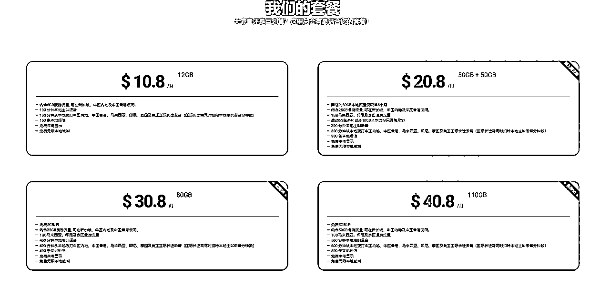
但是中国移动新加坡的电话卡需要你在新加坡有朋友帮你办理，然后激活之后邮寄给你，资费是最有性价比的，同时IP一定是新加坡原生IP，并且在中国漫游直接是中国移动的5G信号，速度非常快。
我的选择：可长期循环使用的美国流量卡DashiSIM
该流量卡有以下特点：
可长期持有，不需要充值保号/保卡，零月租。随时可以通过充值来再次激活使用。
计费方式灵活，可按天数或者流量付费
可提供三个国家和地区的IP地址：美国、欧洲、新加坡（通过设置不同的APN来实现IP地址切换，目前欧洲IP实测出来是法国IP）
可以开热点
中文客服，提供电话、微信、ＷhatsApp、邮件等多种联系方式
在App上可申请SIM卡，卡费、快递费一共33欧元，大约245人民币。国内有现货，不带短信的169元。
流量费用分按天或者按流量算：
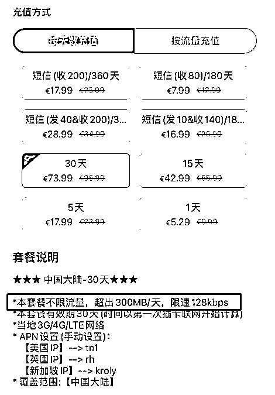
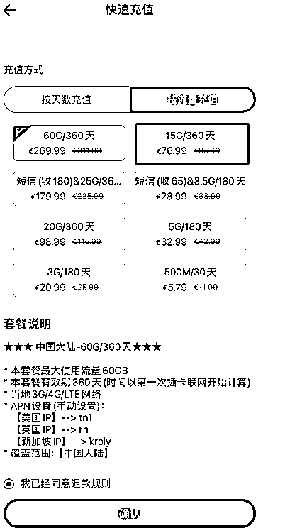
这个流量卡还有个好处，选择不同的APN，可以切换不一样的国家的原生IP：
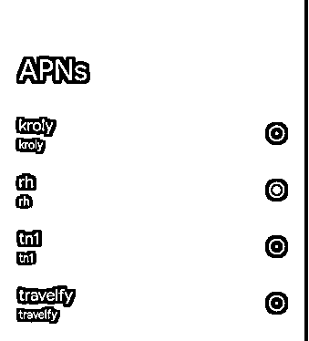
具体使用方法，大家可以自行搜索 dashisim 或者访问他们的官网：
这里不再过度广告。
之前各种教人注册ChatGPT的文章疯狂推荐这家：https://sms-activate.org
这家是一个接码平台，没错，但是如果你要真的喜欢研究跨境出海相关的东西，我推荐另外一个产品给大家，而且还便宜。
淘宝或者咸鱼去搜索 UltraMobile 这个关键词，会有不少卖家卖这样的电话卡：
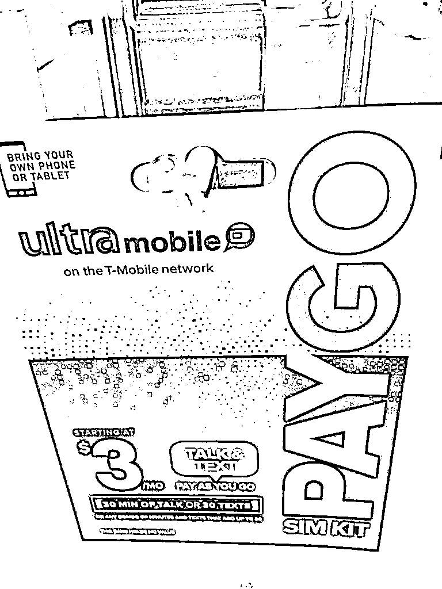
Ultra Mobile 是一家美国 移动虚拟网络运营商 (MVNO)，这是一家私人公司，成立于 2011 年，旗下有 UltraMobile 和 MintMobile 两个品牌，使用的都是 T-Mobile 的网络。
Ultra Mobile 是一家对中文比较友好的运营商，官方网站和 App 都支持中文，甚至也有中文客服。
2019 年 7 月，作为 T-Mobile 收购 Sprint 要求的一部分，T-Mobile 将 $3 Pay As You Go prepaid plan 转移给了 Ultra Mobile。Ultra Mobile $3 PayGo 最早和 T-Mobile PayGo 一样，但经过几次升级后，算是最好的美国保号卡之一。
官方网页：https://www.ultramobile.com/paygo/
Ultra Mobile $3 PayGo 套餐外费用表
应该不少人用的是nobepay这家虚拟卡吧？556766、556735、556305、531847、558068这几个卡头都可以过。
同时这里再推荐一家：https://www.vvacard.com
531847、556766、556735、556305以及558068这几个卡头都可以给ChatGPT付款。
当然我们的专业人士一般不用这种虚拟卡，因为容易被别人玩坏，影响自己。今天这篇文章就教各位申请真正的美国银行卡以及美国信用卡的方法。
华美银行是一家美国本土以服务华人为主的银行，总部在加州，有大约180个分支机构，在美国本土来说已经属于中大型银行。华美是美国纳斯达克的上市公司，市值超过百亿美元，所以从规模和体量来说是值得信任的，另外，也是FDIC的成员，所以有存款保险制度，受国家强制保险的保证，支持中文电话客服。
办理零门槛：
1、无需护照；
2、无需美国签证；
3、无需美国电话号码；
4、无需美国地址；
5、无需预存款；
这是我收到的借记卡：
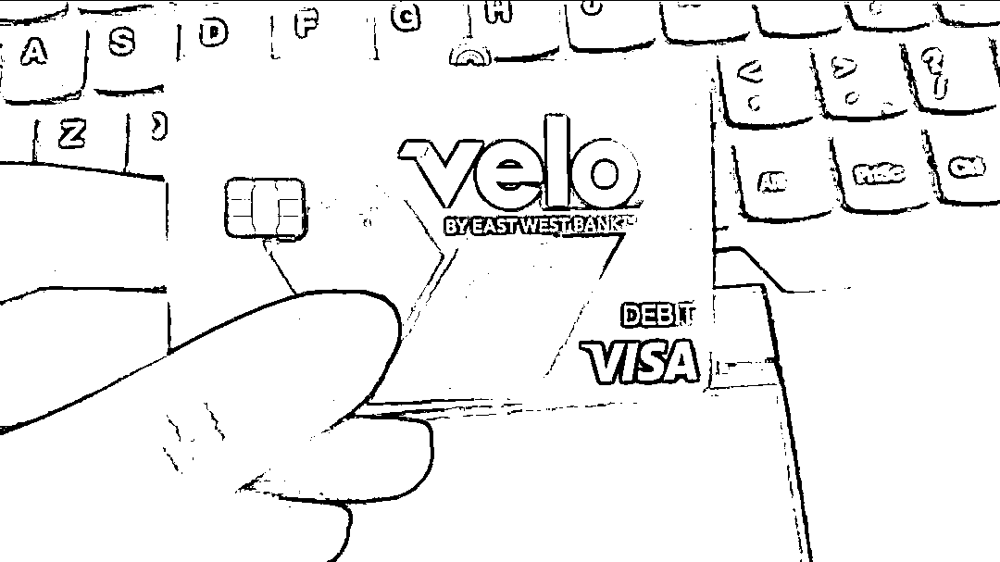
申请方法很简单，通过谷歌商店搜索“velo” ，下载velo app，一步一步来即可：
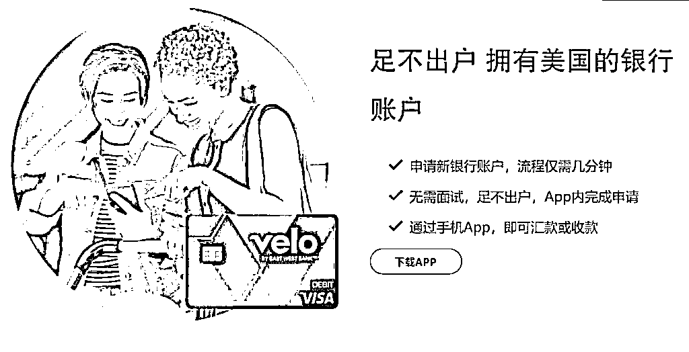
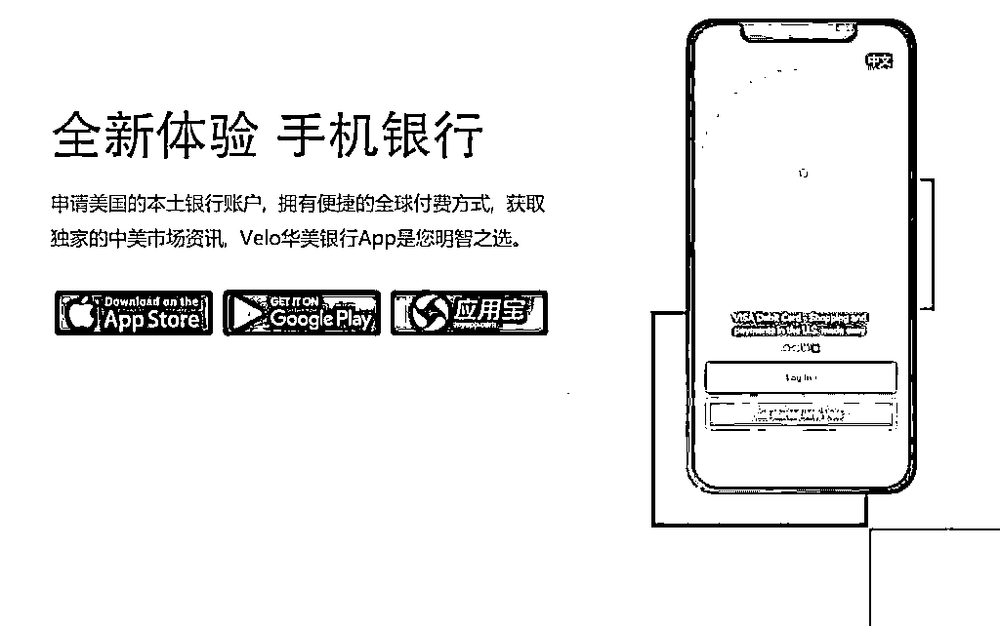
华美银行不仅提供真实的美国Debit Card（储蓄卡）可以网络消费，同时也让中国人拥有真正的美国的银行的信用卡，两者均非常方便地在网上消费。
Wise，前称为 TransferWise：在线汇款 | 国际银行业务功能
Wise一般来说，只要是做过国外的项目，需要收款的都会有这个收款工具，你们理解为国际版支付宝即可，如果没有Wise，大家可以用下面链接申请注册：
https://wise.com/invite/u/weiw586
使用这个推荐链接可以最高享受4500元人民币的免费转账，如果自己直接去官网注册则没有这个优惠。
点击右上角注册按钮
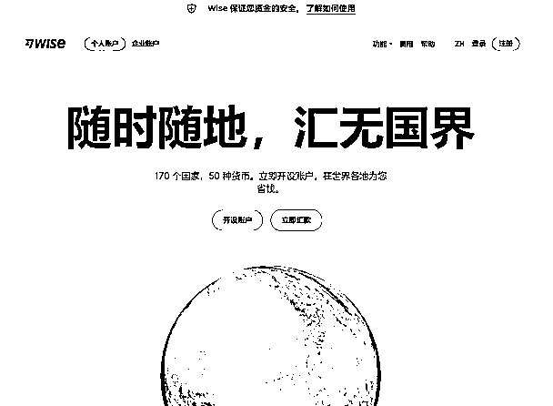
输入邮箱或者使用谷歌帐号，Facebook帐号或者苹果ID联合登录注册：
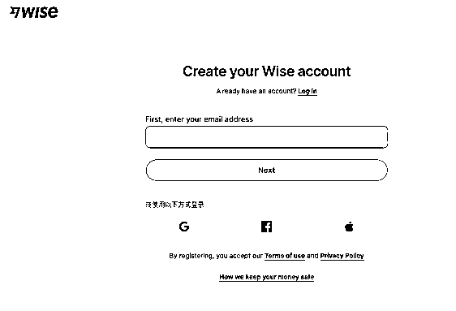
选择个人帐号，然后一步一步来，验证准备护照即可。唯一要说明的是，20美元的入金验证，咸鱼找人解决即可，网上有很多很多攻略，均不适合新手。
注册这块不是重点，重点是当你完全拥有了一个Wise帐号之后，你有两张可以用来付ChatGPT Plus 的Debit卡，一张实物卡，一张电子卡，实物卡通过转运公司可以寄到中国，这个不展开说，说下电子卡：
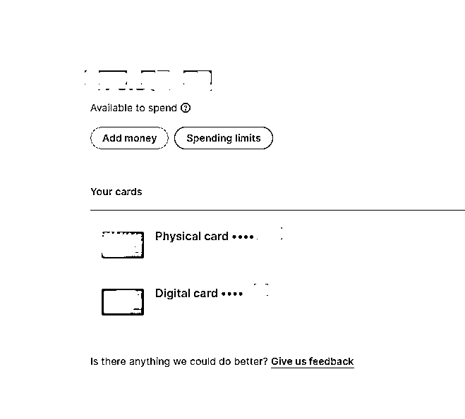
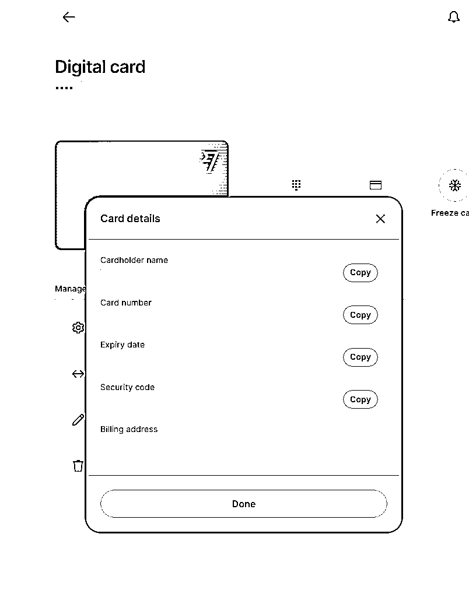
电子卡的所有信息，账单地址，卡号，卡主姓名还有CVV 有效期都是真实有效的，按上面复制粘贴即可使用，只要你的Wise里有钱，就可以一直付账。
上面就是一个专业版的如何申请ChatGPT帐号以及升级的流程。保姆式教学以及教程真心写不来，很多东西大家可以平时多搜索，当然也可以认为这就是如果你要从事国外以及出海相关的赚钱项目，这个就是最最保姆化的教程了，如果连这个都无法适应，建议别浪费时间放弃出海念头。
同时，上面一些资源成本，有一定成本，但是以后均可以帮您解决很多无价的事情，比如UltraMobile的电话卡，大概200多元一张，月租3美元，但是你注册Facebook，推特，电报均可以使用，包括将来去美国开设柜面的银行账户，这个电话卡可以一直使用。Wise更不用说了，多个国家的银行账户一次性开齐，Wise真正最有价值的不是他们的卡可以付款，而是可以收多个国家的外汇。
最后，如果还有问题，要么生财有术的此文下留言我免费解答，或者加入我们这边的星球，不做额外的免费讲解。